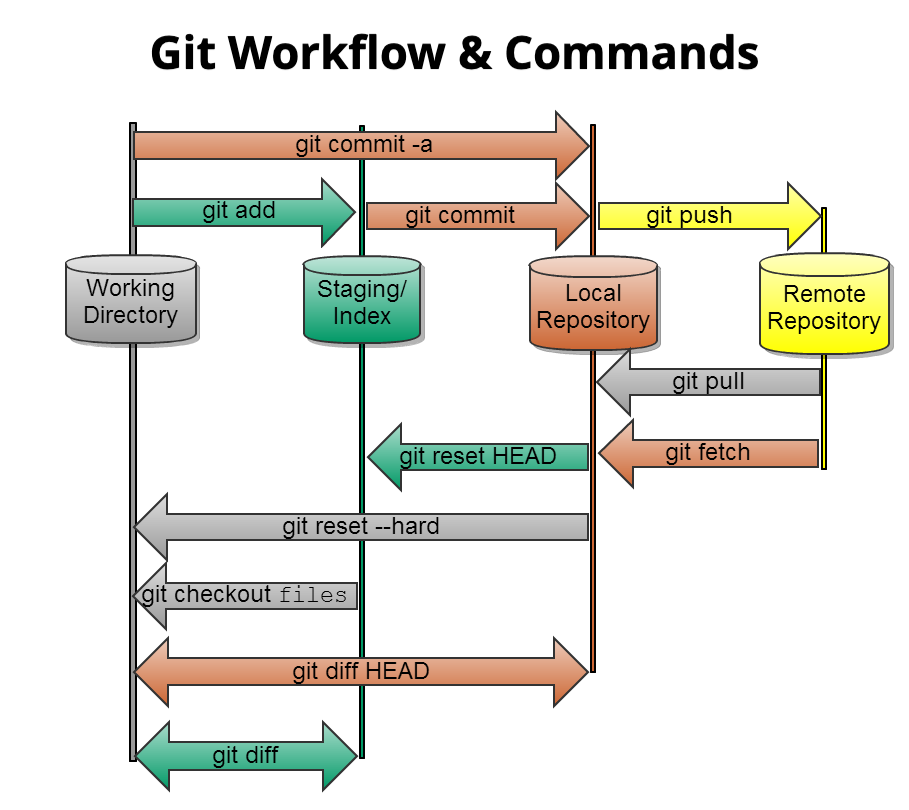
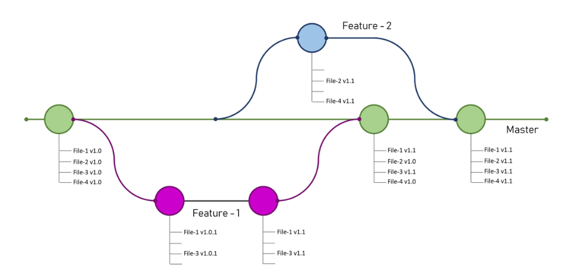
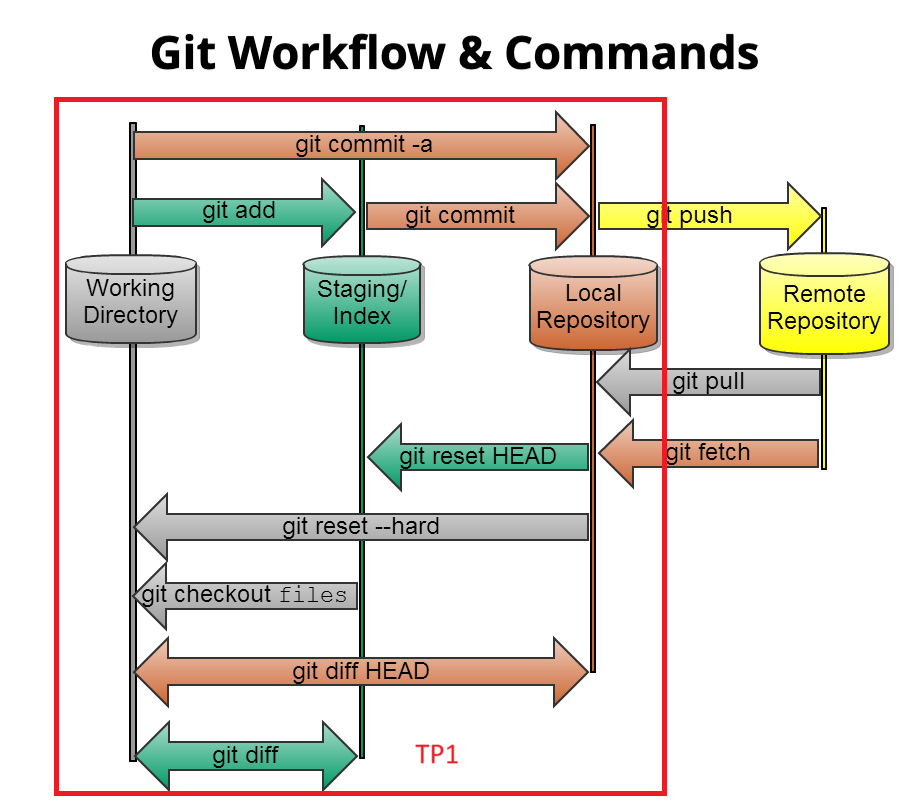

Git au CASD
Equipe Datascience
Objectifs
- Qu'est-ce que Git ?
- Comment fonctionne Git ?
- Qu'est-ce que GitHub/Gitlab ?
- Git au CASD
Qu'est-ce que Git ?
Git est un outil de versioning distribué, créé par Linus Torvalds en 2005 pour gérer le noyau Linux. Les principales caractéristiques de Git sont :
- Le versionning : Le traçage détaillé (auteur, description, ...) et chronologique des modifications.
- La retroversion : La possibilité de revenir à toute version antérieure d'un fichier.
- La collaboration : La possibilité de travailler à plusieurs, en partageant ses contributions .
Les principaux concepts de Git (1)
- Dépôt Git (repo) : Le répertoire où Git enregistre toutes les modifications de vos fichiers
- Répertoire de travail : L'espace contenant les répertoires et fichiers suivis par Git.
- Index : Un espace temporaire pour détailler les modifications avant de les valider.
- Instantané (Snapshot) : Une sauvegarde de l'état de tous les fichiers à un instant donné.
Les principaux concepts de Git (2)
- Commit : L'action qui enregistre un instantané d'un ensemble de modifications, incluant la date, l'auteur et une description.
- Branche : Collection organisée de commits. Chaque repo contient au moins une branche. La branche principale est appelée la master.
- Branche master : La branche contenant la version la plus opérationnelle et robuste du code, dédiée à la production.
Les principaux concepts de Git (3)
- HEAD : Un pointeur désignant la position actuelle dans la branche active, où sera enregistré le prochain commit.
- Fusion (merge) : Un espace temporaire pour prévisualiser et valider les modifications lors de l'enregistrement des modifications d'une branche dans une autre.
Workflow Git
Fusion de branches
TP1
Qu'est-ce que Github ?
github.com est le service web d'hébergement de dépôts Git le plus populaire. Il ajoute de nombreuses fonctionnalités à Git (ex : interface utilisateur, pull requests, système de gestion de projets, etc). Il existe d'autres solutions similaires :
Services web Git auto-hébergés
Il existe de nombreuses solutions web Git auto-hébergées :
- GitLab Community Edition (CE) : Open-source et très complète
- Gitea : Open source, légère et facile à installer
- SourceHut : Modulaire, minimaliste et rapide
- Gitprep : Clône de Github
Git au casd
Le CASD propose propose deux types de dépôts Git distants : un dépôt git-bare, et un serveur auto-hébergé gitlab-ce
- Dépôt Git Bare : disponible par défaut pour tous les projets.
- Serveur Gitlab-ce : disponible uniquement sur demande à l'équipe PMS, après une estimation de coût basée sur la configuration du serveur.
Qu'est-ce qu'un dépôt Git Bare ?
Un dépôt Git bare est un dépôt Git qui ne dispose pas d'un répertoire de travail. Il ne contient que le répertoire .git (i.e., les données de versionning). On l'utilise généralement :
- Comme un dépôt central pour un projet collaboratif (version allégée de Github)
- Comme une cible de déploiement en continu